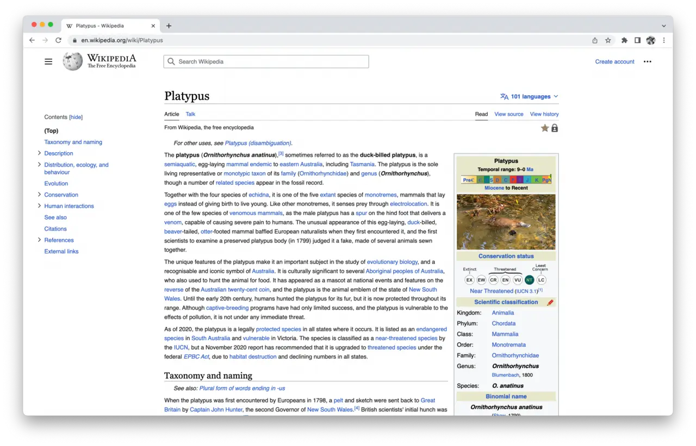

Short answer
An indexable page is a document: one canonical URL, one subject, and text a fetch can return.
A state inside a single-page app can look like a page and still be only a view. If the address does not return that subject’s text, it is not yet a document. SEO Health starts from the fetch. Design can still build views. The views that should be found need documents.
Definition
The screenshot is one article in a browser: one title, one address, and a body of text. It is a reminder of the unit, not a wireframe to copy, and not a layout this site claims as its own. The unit has a title that matches the H1, a language, and a main region. It does not have to be long. A thin document is a different problem from a missing document. Do not create extra URLs to make the unit look complete.
What belongs in the page basics
For every URL you want found, make a fetch return that subject’s title and primary text.
Near-duplicate documents that swap a city name into the same paragraph are not more units of architecture. They are one document copied. The health response is to keep the real document and stop the copies, which is also how you avoid pretending page count is growth.

What to check
- A fetch that returns the subject’s text
- Title and H1 naming that subject
- Hash-only views not treated as documents
- Near-duplicates not minted to inflate the count
- One intended URL fetched and read
A practical example
A “page” for each alloy is a tab whose URL is a hash. The fetch of the base URL returns only the first alloy. The repair either gives each alloy a URL that returns its text, or keeps one document that contains all alloys in the HTML. Tabs can remain as a way to move inside a document that already holds the text.
What this does not claim
Having a document does not guarantee rankings or citations.
Where Mika Visibility files this
Mika Visibility files titles, headings, language, and media basics under SEO Health content and structure checks. They help a page be understood. They are not SEO Growth, which asks what coverage is still missing, and they are not a guarantee that an answer product will cite the page.
The encyclopedia article in the screenshot is an example of one document. It is not a layout specification.
FAQ
What is an indexable page?
An indexable page is a document: one canonical URL, one subject, and text a fetch can return.
What must a fetch return?
For every URL you want found, make a fetch return that subject’s title and primary text.
Does a document guarantee rankings?
Having a document does not guarantee rankings or citations.
Next step
Run a structured SEO + GEO audit to see health findings, growth gaps, and a blueprint you can act on.
Clearer entities, answers, evidence, and context make pages easier to understand and reference. Results in any answer product are not guaranteed.